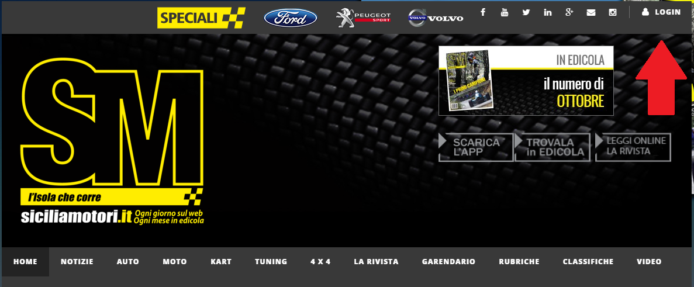
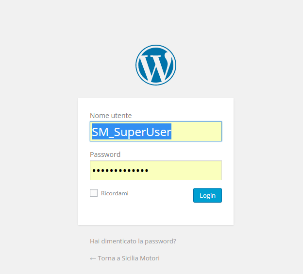
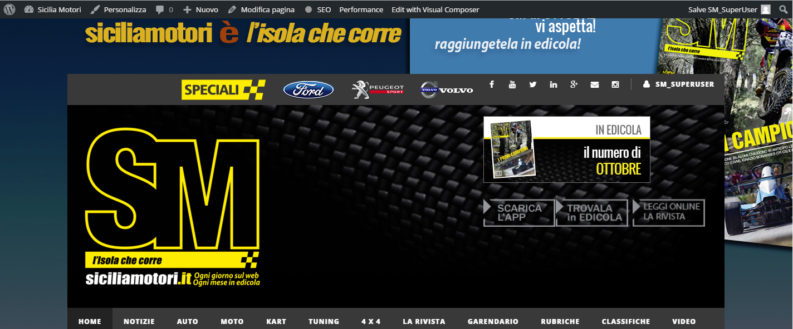

Per effettuare l'accesso al sito si SiciliaMotori utilizza il tuo nome utente, composto da il tuo nome più il tuo cognome; Se ad esempio ti chiami Gianfranco Pettinello il tuo nome utente sarà Gianfranco_Pettinello. La password ti è sata mandata sulla tua email personale, ma se non la trovi più o semplicemente non la ricordi manda una mail a: a.buffa001@gmail.com, in modo da poter resettare la password.
Per poterti collegare al sito clicca sul tasto login in alto a destra
Una volta cliccato sul Login verrai reinderizzato sull pannelo di controllo nel quale inserire le credenziali d'accesso.
Dopo aver fatto l'accesso, il sito si presenterà in questa modo;
La barra in alta ci servirà per inserire gli articoli e gestire il sito